Top
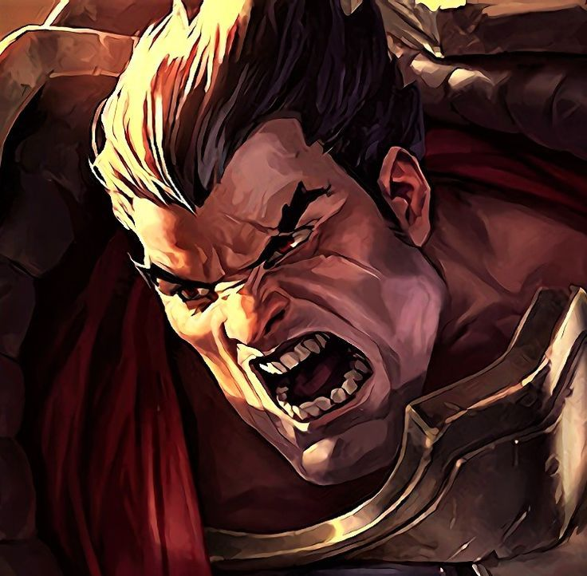
Darius
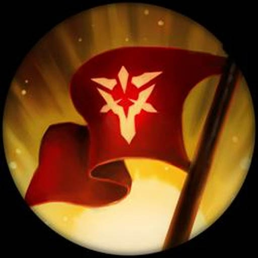
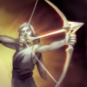
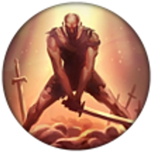
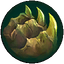
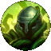
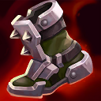
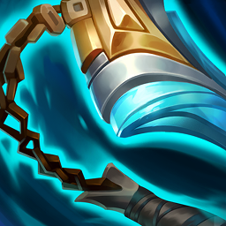
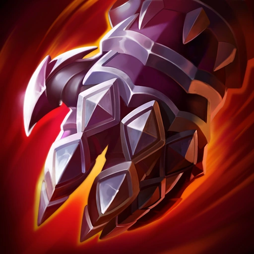
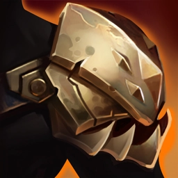
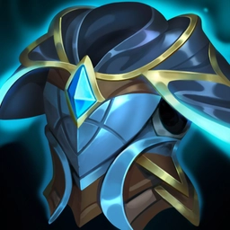
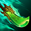
League builds & strategie
Sprawdzone buildy, runy i przedmioty dla każdej linii, plus szybki podgląd najnowszego patcha w jednym miejscu.












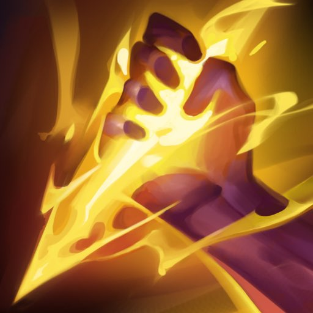
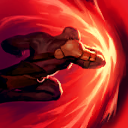
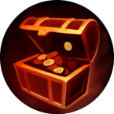
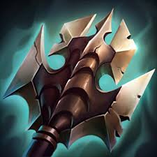
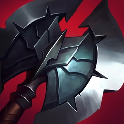
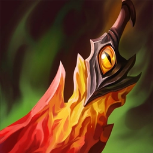
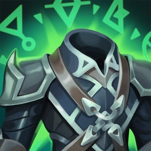
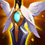

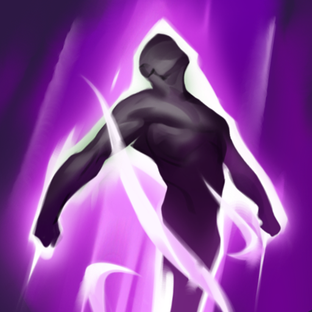
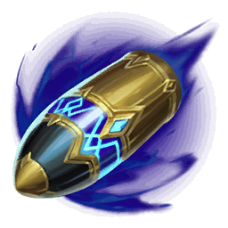
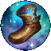
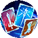
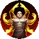
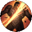


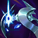


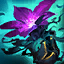
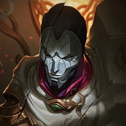

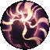


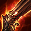

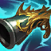

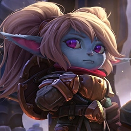
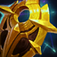
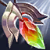

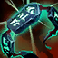
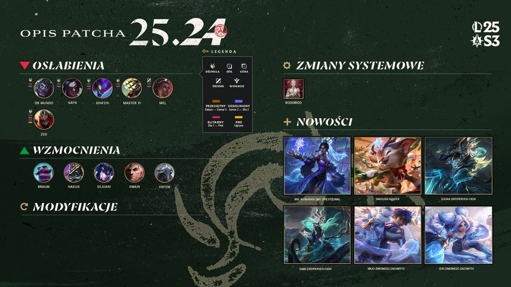